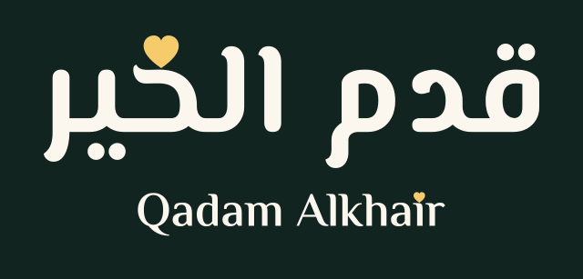
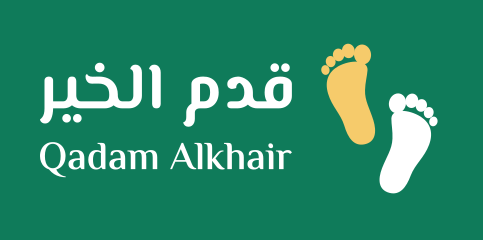
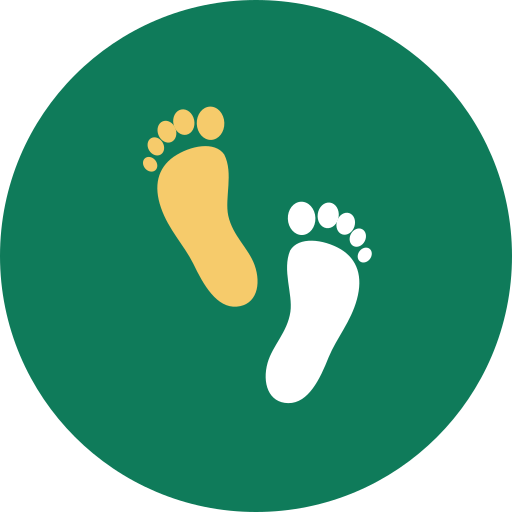
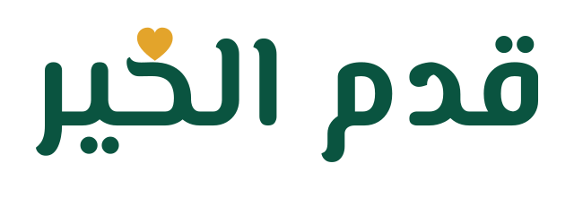

النسخ
الشعار الأساسي — أفقيqadam-logo.svg عموديqadam-logo-stacked.svg
عموديqadam-logo-stacked.svg
على الداكنqadam-logo-dark.svg
على الأخضرqadam-logo-on-green.svgعمودي على الداكنqadam-logo-stacked-dark.svgلون واحدqadam-logo-mono-ink.svg الأيقونة وحدهاqadam-mark.svg
الأيقونة وحدهاqadam-mark.svg
صورة البروفايلqadam-icon.svg أيقونة تطبيقqadam-app-icon.svg
أيقونة تطبيقqadam-app-icon.svg أيقونة المتصفحqadam-favicon.svg
أيقونة المتصفحqadam-favicon.svg
الاسم بالعربيqadam-wordmark-ar.svgالاسم بالإنجليزيqadam-wordmark-en.svg
الألوان
Khair Green #0A5440
Step Green #0F7B5A
Khair Gold #E3A42B
Light Gold #F6CB6B
Ink #12241F
Cream #FBF7EF